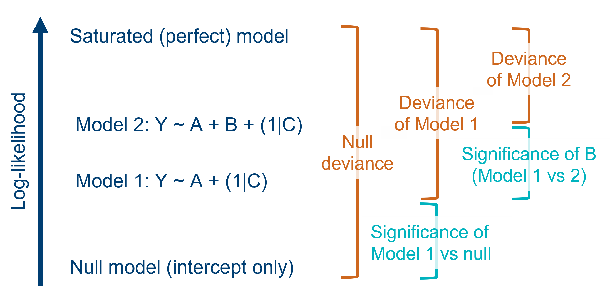
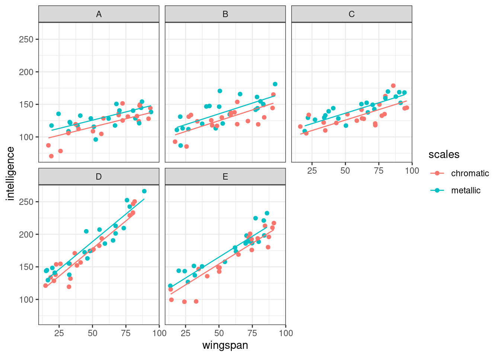

library(lmerTest)
library(pbkrtest)6 Significance & model comparison
6.1 Libraries and functions
Click to expand
We’ll primarily be using the lmerTest package for performing certain types of significance tests. The pbkrtest package is also introduced.
6.2 The problem
Unlike standard linear models, p-values are not calculated automatically for a mixed effects model in lme4, as you may have noticed in the previous section of the materials. There is a little extra work and thought that goes into testing significance for these models.
The reason for this is the inclusion of random effects, and the way that random effects are estimated. When using partial pooling to estimate the random effects, there is no way to precisely determine the number of degrees of freedom.
This matters, because we need to know the degrees of freedom to calculate p-values in the way we usually do for a linear model (see the drop-down box below if you want a more detailed explanation for this).
Degrees of freedom & p-values
The degrees of freedom in a statistical analysis refers to the number of observations in the dataset that are free to vary (i.e., free to take any value) once the necessary parameters have been estimated. This means that the degrees of freedom varies with both the sample size, and the complexity of the model you’ve fitted.
Why does this matter? Well, each test statistic (such as F, t, chi-square etc.) has its own distribution, from which we can derive the probability of that statistic taking a certain value. That’s precisely what a p-value is: the probability of having collected a sample with this particular test statistic, if the null hypothesis were true.
Crucially, the exact shape of this distribution is determined by the number of degrees of freedom. This means we need to know the degrees of freedom in order to calculate the correct p-value for each of our test statistics.
However, when we fit a mixed effects model, we may still want to be able to discuss significance of a) our overall model and b) individual predictors within our model.
6.3 Overall model significance
Likelihood ratio tests (LRTs) are used to compare goodness-of-fit, or deviance, between two models in order to produce p-values. They don’t require us to know the degrees of freedom of those models.
One use of an LRT is to check the significance of our model as a whole, although we’ll revisit the LRT in later sections of this page as well.
What makes this test a “likelihood ratio”?
Remember that mixed effects models are fitted by maximising their likelihood, which is defined as the joint probability of the sample given a particular set of parameters (i.e., how likely is it that this particular set of data points would occur, given a model with this equation?).
Each distinct mixed model that is fitted to a given dataset therefore has its own value of likelihood. It will also, therefore, have its own value of deviance. Deviance is defined as the difference in log-likelihoods between a candidate model, and the hypothetical perfect “saturated” model for that dataset.
So, when we want to compare two models, we can calculate the ratio of their individual likelihoods (which is mathematically equivalent to the difference of their deviances, because of how logarithms work). This ratio can be thought of as a statistic in its own right, and approximately follows a chi-square distribution.
To determine whether this ratio is significantly different from 1, we calculate the degrees of freedom for the analysis - which is equal to the difference in the number of parameters between the two models we’re comparing - to find the corresponding chi-square distribution, from which we can then calculate a p-value.
Let’s try this out on the trusty sleepstudy dataset. We create both our candidate model, lm_sleep, and a null model, lm_null (note, we have to do this using the lm function rather than lmer)
data("sleepstudy")
lme_sleep <- lmer(Reaction ~ Days + (1 + Days|Subject),
data = sleepstudy)
lm_null <- lm(Reaction ~ 1, data = sleepstudy)Then, we use the old faithful anova function to compare our candidate model to the null model, by calling them one after the other. Note that we have to call our candidate model first; if you list the null model first, you’ll get an error.
anova(lme_sleep, lm_null)refitting model(s) with ML (instead of REML)Data: sleepstudy
Models:
lm_null: Reaction ~ 1
lme_sleep: Reaction ~ Days + (1 + Days | Subject)
npar AIC BIC logLik deviance Chisq Df Pr(>Chisq)
lm_null 2 1965.0 1971.4 -980.52 1961.0
lme_sleep 6 1763.9 1783.1 -875.97 1751.9 209.11 4 < 2.2e-16 ***
---
Signif. codes: 0 '***' 0.001 '**' 0.01 '*' 0.05 '.' 0.1 ' ' 1This table gives us the \(\chi^2\) statistic (i.e., the likelihood ratio) and an associated p-value. Here, the \(\chi^2\) is large and the p-value small, meaning that our model is significantly better than the null.
A helpful, intuitive way to think about this test is: for the increase in complexity of my candidate model (vs the null model), has the deviance of the model decreased significantly? Or: given the number of predictors in my model, has the goodness-of-fit improved significantly from the null?
Refitting using ML (instead of ReML)
Note the warning/information message R provides when we use the anova function this way: “refitting model(s) with ML (instead of REML)”.
R, or more specifically the anova function, has done something helpful for us here. For reasons that we won’t go into too much (though, feel free to ask if you’re curious!), we cannot use LRTs to compare models that have been fitted with the ReML method, even though this is the standard method for the lme4 package. So we must refit the model with ML.
(Incidentally, we could have chosen to fit the models manually with ML, if we’d wanted to. The lmer function takes an optional REML argument that we can set to FALSE - it’s set to TRUE by default. But letting the anova function do it for us is much easier!)
6.4 Fixed effects
In addition to asking about the model as a whole, we often want to know about individual predictors. Because it’s simpler, we’ll talk about fixed predictors first.
There are multiple methods for doing this. We’ll step through the some of the most popular in a bit of detail:
- Likelihood ratio tests
- F-tests using approximations of degrees of freedom
- t-to-z approximations (Wald tests)
- Bootstrapping
6.4.1 Method 1: Likelihood ratio tests (LRTs)
As we mentioned above, LRTs are useful for comparing the model as a whole to the null - but they can also be used to investigate individual predictors.
Crucially, we are only able to use this sort of test when one of the two models that we are comparing is a “simpler” version of the other, i.e., one model has a subset of the parameters of the other model.
So while we could perform an LRT just fine between two models Y ~ A + B + C and Y ~ A + B + C + D, to investigate the effect of D, or between any model and the null (Y ~ 1), we would not be able to use this test to compare Y ~ A + B + C and Y ~ A + B + D.

Let’s use an LRT to test the fixed effect of Days in our sleepstudy example. First, we’ll fit a random-effects-only model (we do this by replacing Days with 1, to indicate no fixed effects).
lme_sleep_random <- lmer(Reaction ~ 1 + (1 + Days|Subject),
data = sleepstudy)Then we use anova to compare them, again putting our more complex model first.
anova(lme_sleep, lme_sleep_random)refitting model(s) with ML (instead of REML)Data: sleepstudy
Models:
lme_sleep_random: Reaction ~ 1 + (1 + Days | Subject)
lme_sleep: Reaction ~ Days + (1 + Days | Subject)
npar AIC BIC logLik deviance Chisq Df Pr(>Chisq)
lme_sleep_random 5 1785.5 1801.4 -887.74 1775.5
lme_sleep 6 1763.9 1783.1 -875.97 1751.9 23.537 1 1.226e-06 ***
---
Signif. codes: 0 '***' 0.001 '**' 0.01 '*' 0.05 '.' 0.1 ' ' 1This output tells us that, for the reduction in the number of parameters (i.e., removing Days), the difference in deviances is significantly big. In other words, a fixed effect of Days is meaningful when predicting reaction times.
6.4.2 Method 2: Approximation of the degrees of freedom
This method is perhaps the most intuitive for those coming from a linear modelling background. Put simply, it involves making an educated guess about the degrees of freedom with some formulae, and then deriving a p-value as we usually would.
This lets us obtain p-values for any t- and F-values that are calculated, with just the one extra step compared to what we’re used to with linear models.
For this approach, we will use the companion package to lme4, a package called lmerTest.
lmerTest
The package provides a modified version of the lmer() function, one that can approximate the number of degrees of freedom, and thus provide estimated p-values.
If you have lmerTest loaded, R will automatically default to its updated version of the lmer() function, and perform the degrees of freedom approximation as standard. (You can prevent it from doing so by typing lme4::lmer() instead.)
Let’s look again at our random slopes & intercepts model for the sleepstudy dataset as a test case. We’ll refit the model once we’ve loaded the new package.
library(lmerTest)
lme_sleep <- lmer(Reaction ~ Days + (1 + Days|Subject),
data = sleepstudy)The new version of the lmer function fits a very similar model object to before, except now it contains the outputs of a number of calculations that are required for the degrees of freedom approximation. By default, lmerTest uses the Satterthwaite approximation, which is appropriate for mixed models that are fitted using either MLE or ReML, making it pretty flexible.
We’ll use the anova function from the lmerTest package to produce an analysis of variance table (R will default to using this version of the function unless told otherwise). This gives us an estimate for the F-statistic and associated p-value for our fixed effect of Days:
anova(lme_sleep)Type III Analysis of Variance Table with Satterthwaite's method
Sum Sq Mean Sq NumDF DenDF F value Pr(>F)
Days 30031 30031 1 17 45.853 3.264e-06 ***
---
Signif. codes: 0 '***' 0.001 '**' 0.01 '*' 0.05 '.' 0.1 ' ' 1
F-statistics vs t-statistics
If you were to look at the summary for our new lme_sleep model, you’d notice some t-statistics and p-values appearing next to the fixed effects. These are not quite the same as the F-statistics and p-values that we’ve extracted using the anova function.
In fact, this odd distinction between t-statistics and F-statistics is not unique to mixed models; you might remember it from linear modelling. The t-statistics are what we call “Wald tests” (more coming up on those in the next section) and test the null hypothesis that the coefficient \(\beta = 0\) for that predictor. This might not sound too dissimilar from what an analysis of variance F-test is assessing - and for continuous predictors, the result is usually very similar. But for a categorical predictor, you will see separate Wald tests for each pairwise comparison against the reference group, while you would only see a single F-statistic for the lot.
Using the Kenward-Roger approximation
Although the Satterthwaite approximation is the lmerTest default, another option called the Kenward-Roger approximation also exists. It’s less popular than Satterthwaite because it’s a bit less flexible (it can only be applied to models fitted with ReML).
If you wanted to switch to the Kenward-Roger approximation, you can do it easily by specifying the ddf argument:
anova(lme_sleep, ddf = "Kenward-Roger")Type III Analysis of Variance Table with Kenward-Roger's method
Sum Sq Mean Sq NumDF DenDF F value Pr(>F)
Days 30031 30031 1 17 45.853 3.264e-06 ***
---
Signif. codes: 0 '***' 0.001 '**' 0.01 '*' 0.05 '.' 0.1 ' ' 1In reality, though, chances are that you’ll just stick with the Satterthwaite default if you plan to use approximations for your own analyses. Statisticians have debated the relative merits of Satterthwaite versus Kenward-Roger, but the differences only really tend to emerge under specific conditions. Here, it’s given us the same result.
6.4.3 Method 3: t-to-z approximations
This is a more unusual method, and another form of approximation. You’ll see this less often, but it’s included here for completeness.
This method involves making use of the Wald t-values, which are reported as standard in the lme4 output.
Specifically, we can choose to treat these t-values as if they were z-scores instead, if our sample size is considered large enough. And, because z-scores are standardised, we don’t need any degrees of freedom information to derive a p-value - we can just read them directly out of a table (or get R to do it for us).
The logic of using z-scores instead
A z-score is different from a statistic such as t or F. They’re standardised, because they’re measured in standard deviations - i.e., a z-score of 1.3 tells you that you are 1.3 standard deviations away from the mean.
This is helpful for deriving a p-value without degrees of freedom, but it raises the question: why is it okay to treat t-values as z-scores?
The logic here is that the t distribution actually begins to approximate (i.e., match up with) the z distribution as the sample size increases. Officially, when the sample size is infinite, the two distributions are identical. So, with a sufficiently large sample size, we can “pretend” or “imagine” that the Wald t-values are actually z-distributed, giving us p-values.
Unfortunately, there are no formal guidelines to tell you whether your dataset is “large enough” to do this. It will depend on the number and type of predictors in your model. Plus, the t-to-z approximation is considered to be “anti-conservative” - in other words, there’s a higher chance of false positives than with other methods.
Some researchers adapt the t-to-z approximation approach a little to help with this; instead of explicitly calculating p-values, they instead use a rule of thumb that any Wald t-value greater than 2 is large enough to be considered significant. This is quite a strict threshold, so it can help to filter out some of the false positives or less convincing results.
Calculating the p-value for a z-score can be done quickly in R using the pnorm function. We include the z-score (or, here, the t-value that we are treating as a z-score) as the value for our argument q. To make this a two-tailed test, we have to set lower.tail to FALSE, and multiply the answer by 2.
summary(lme_sleep)Linear mixed model fit by REML. t-tests use Satterthwaite's method [
lmerModLmerTest]
Formula: Reaction ~ Days + (1 + Days | Subject)
Data: sleepstudy
REML criterion at convergence: 1743.6
Scaled residuals:
Min 1Q Median 3Q Max
-3.9536 -0.4634 0.0231 0.4634 5.1793
Random effects:
Groups Name Variance Std.Dev. Corr
Subject (Intercept) 612.10 24.741
Days 35.07 5.922 0.07
Residual 654.94 25.592
Number of obs: 180, groups: Subject, 18
Fixed effects:
Estimate Std. Error df t value Pr(>|t|)
(Intercept) 251.405 6.825 17.000 36.838 < 2e-16 ***
Days 10.467 1.546 17.000 6.771 3.26e-06 ***
---
Signif. codes: 0 '***' 0.001 '**' 0.01 '*' 0.05 '.' 0.1 ' ' 1
Correlation of Fixed Effects:
(Intr)
Days -0.1382*pnorm(q = 6.771, lower.tail = FALSE)[1] 1.278953e-11If we input the t-value for our Days fixed effect, we can see that it gives us a very small p-value. This p-value of 1.28 x 10-11 is quite a bit smaller than the one that our Satterthwaite degrees of freedom approximation provided (3.26 x 10-6) - an example of how this t-to-z approximation is more generous. However, in this case it’s very clear that the Days effect definitely is significant, whichever way we test it, so it’s perhaps not a concern.
6.4.4 Method 4: Bootstrapping
Now, we get a little bit more technical.
Entire pages of course materials could be dedicated to bootstrapping and simulation methods. These ideas go well beyond linear mixed models. But, now is not the time for all that.
We’re going to look at one implementation of bootstrapping for mixed models, as an example, but if you’re curious then a good place to start follow-up reading is this excellent resource.
The specific option we’ll look at is performing parametric bootstrapping via the PBmodcomp function from the pbkrtest package.
This method involves:
- Simulating a bunch of datasets (specifically, based on the “reduced” or less complex model)
- For each simulated dataset, fit both models
- For each simulated dataset, compute the difference in deviances between the two models, to provide a distribution of differences in deviances
- Compare this distribution to the actual/observed difference in deviances
The syntax is very similar to the anova function, but you also set a seed.
(This is something that’s often done when simulating in general; it ensures that each time you run the code, you’ll get the same set of numbers, so long as you use the same seed. You can choose whatever number you like.)
pbkrtest::PBmodcomp(lme_sleep, lme_sleep_random, seed = 20)Bootstrap test; time: 17.71 sec; samples: 1000; extremes: 0;
Requested samples: 1000 Used samples: 996 Extremes: 0
large : Reaction ~ Days + (1 + Days | Subject)
Reaction ~ 1 + (1 + Days | Subject)
stat df p.value
LRT 23.537 1 1.226e-06 ***
PBtest 23.537 0.001003 **
---
Signif. codes: 0 '***' 0.001 '**' 0.01 '*' 0.05 '.' 0.1 ' ' 1It takes several seconds, because running 1000 simulations and fitting 2000 models isn’t instantaneous. You may also get a bunch of warnings (they’ve been suppressed here for these course materials, but don’t be alarmed if they appear for you when running this example).
But, as you can see, the p-value it produces is not necessarily the same as the one produced by a standard LRT.
6.4.5 Choosing the “right” method
Several methods have been discussed here. Lots of researchers favour either the F-tests by degrees of freedom approximation, or the likelihood ratio test (LRT) for fixed effects, because they’re relatively easy to implement - hence why we’ve spent slightly more time on them.
If we had to choose, we personally favour the LRT, because it’s generalisable to any type of model that’s fitted with maximum likelihood estimation, making it a very useful addition to a researcher’s statistical toolkit.
Those with more coding or theoretical background, however, might feel strongly that bootstrapping is always a more appropriate method for deriving p-values. And they might well be right. There’s no strict answers once we get this far beyond the standard linear model.
It’s worth noting that there’s nothing stopping you using more than one approach when it comes to testing your own models, and “triangulating” the results to help you determine how robust your conclusions are.
6.5 Random effects
With fixed effects under our belt, let’s now move to thinking about random effects.
There is a broader philosophical question to be asked here: what does it even mean for a random effect to be “significant”?
Remember that a random effect is not a single coefficient. It’s a measure of the distribution across a set of clusters or groups. Quite often, we include a random effect simply to account for it, to better represent our design, not because we want to treat it as a “predictor” in the traditional sense.
Perhaps a better way to think about it is: is my model better with or without this random effect?
Or even: is there a need to test significance at all?
We’ll talk through a few different approaches:
- Using LRTs (with caveats)
- Using AIC/BIC (also with caveats)
- Bootstrapping
- Not testing at all
6.5.1 Method 1: Using LRTs
The most common method that you’ll see used for judging whether random effects improve a model is the trusty LRT.
The major caveat with LRTs for random effects
Though you’ll see LRTs used often for random effects, technically this doesn’t provide great estimates.
When we run such a test, we’re essentially asking whether the variance of our chosen random effect is equal to zero (i.e., our null hypothesis is \(\sigma^2 = 0\)). But, as a statistican might point out, 0 is “on the boundary of the feasible space” - in other words, 0 is the lowest possible value that the variance could ever be.
Because of this, the various approximations to distributions that we rely on for the maths of an LRT to work, kind of break down. The result is that the p-values calculated for LRTs are very conservative, i.e., too large/strict.
In the simplest case, testing simple random effects one at a time, the p-value is approximately twice as large as it should be. And the problem gets worse when testing multiple correlated random effects (see bonus materials for more info on these correlations).
This doesn’t stop people using them for this purpose, and it doesn’t have to stop you. But it’s something you should really be aware of if you choose this method.
The approach is much the same as for fixed effects: construct two nested models, with and without the effect of interest.
Then, use the anova function to perform the LRT.
lme_sleep_intercepts <- lmer(Reaction ~ Days + (1|Subject),
data = sleepstudy)
anova(lme_sleep, lme_sleep_intercepts)refitting model(s) with ML (instead of REML)Data: sleepstudy
Models:
lme_sleep_intercepts: Reaction ~ Days + (1 | Subject)
lme_sleep: Reaction ~ Days + (1 + Days | Subject)
npar AIC BIC logLik deviance Chisq Df Pr(>Chisq)
lme_sleep_intercepts 4 1802.1 1814.8 -897.04 1794.1
lme_sleep 6 1763.9 1783.1 -875.97 1751.9 42.139 2 7.072e-10
lme_sleep_intercepts
lme_sleep ***
---
Signif. codes: 0 '***' 0.001 '**' 0.01 '*' 0.05 '.' 0.1 ' ' 1Once again, there is a significant difference between the two models, as seen by our small p-value. This tells us that the random slopes of Days|Subject is meaningful, and makes a difference in our model.
You can even use the anova function to compare models with and without random effects entirely, i.e., compare a linear mixed model to a linear model.
lm_sleep <- lm(Reaction ~ Days, data = sleepstudy)
anova(lme_sleep, lm_sleep)refitting model(s) with ML (instead of REML)Data: sleepstudy
Models:
lm_sleep: Reaction ~ Days
lme_sleep: Reaction ~ Days + (1 + Days | Subject)
npar AIC BIC logLik deviance Chisq Df Pr(>Chisq)
lm_sleep 3 1906.3 1915.9 -950.15 1900.3
lme_sleep 6 1763.9 1783.1 -875.97 1751.9 148.35 3 < 2.2e-16 ***
---
Signif. codes: 0 '***' 0.001 '**' 0.01 '*' 0.05 '.' 0.1 ' ' 1Make sure you call the linear mixed model (i.e., the more complex model) first, because you will get an error if you put the two models the wrong way around here.
6.5.2 Method 2: AIC/BIC values
Some researchers use model comparison procedures, such as stepwise elimination, to decide whether or not to keep or drop certain random effects from their models.
As you may have noticed in the outputs from all of the LRTs above, the anova function automatically provides Akaike information criterion (AIC) and Bayesian information criterion (BIC) values for the different nested models.
For instance, when comparing lm_sleep and lme_sleep above, we can see that the linear model has larger AIC/BIC values (and greater deviance, i.e., worse goodness-of-fit) than the linear mixed model with our random slopes & intercepts in it.
The same caveat as with LRTs
Using AIC/BIC to make decisions about random effects is subject to the same caveat as for LRTs: the values you get for these information criteria end up being overly conservative.
In other words, AIC/BIC values can give an underestimation of the importance or use of a random effect in a linear mixed model, perhaps leading you to drop it even if it’s helpful.
6.5.3 Method 3: Bootstrapping
As we did above for the fixed effects, we can use parametric bootstrapping to investigate random effects.
It works in exactly the same way: feed in two models, one with and one without the random effect that you’re interested in testing, and don’t forget to pick a value to set the seed.
pbkrtest::PBmodcomp(lme_sleep, lme_sleep_intercepts, seed = 20)Bootstrap test; time: 14.42 sec; samples: 1000; extremes: 0;
large : Reaction ~ Days + (1 + Days | Subject)
Reaction ~ Days + (1 | Subject)
stat df p.value
LRT 42.139 2 7.072e-10 ***
PBtest 42.139 0.000999 ***
---
Signif. codes: 0 '***' 0.001 '**' 0.01 '*' 0.05 '.' 0.1 ' ' 1Once again, you may get a long list of warnings as it simulates and fits models to a bunch of different datasets.
6.5.4 Method 4: Not testing at all
This might seem like a bit of an odd concept, especially placed where it is at the end of a page all about significance testing.
And of course, we’re not advocating for throwing all the possible random effects into an overly complicated model and just accepting whatever numbers fall out. You’re still aiming for parsimony, and your model should still represent what’s actually going on in your experimental design.
But, many people - including those with far more experience in mixed models than us - argue that you shouldn’t drop a random effect simply because a p-value or AIC/BIC value tells you so. If that random effect is truly important in representing the design and structure of your dataset, then your model is better served by containing it.
In other words, it’s meaningful because of the experimental design, not because of the numbers that come out of your model.
This philosophical stance is particularly applicable in situations where you’re including random effects simply to account for the hierarchical, non-independent structure in your data, because you’re interested in the overall or average trends.
A final thing to add…
Some of the people who take this stance (including authors of some of the packages we’ve used) might argue that significance is no more important, or is even less important, than the uncertainty of the random effects. How confident are we that we’ve estimated the variance correctly? What are the confidence intervals within which the variance falls?
Now, that really is a can of worms we’re not going to open here, but you might be interested to know that packages exist for computing these confidence intervals; lme4 even comes with a function for it.
If you’re curious, you could start some follow-up reading here.
6.6 Exercises
6.6.1 Dragons revisited
Exercise
Level:
Let’s return to the dataset from a previous exercise, Exercise 5.6.3.
Previously, we fit a mixed model to this dataset that included response variable intelligence, fixed effects of wingspan, scales and wingspan:colour, and two random effects: random intercepts 1|mountain, and random slopes for wingspan|mountain.
dragons <- read_csv("data/dragons.csv")
lme_dragons <- lmer(intelligence ~ wingspan*scales + (1 + wingspan|mountain),
data = dragons)Use likelihood ratio tests to assess:
- whether the model above is significant versus the null model
- whether the fixed effects are significant
If you’re feeling adventurous, you can also:
- use LRTs, AIC and/or bootstrapping to assess the random effects, and compare the results
- use other methods to assess the significance of the fixed effects, and compare the results
Worked answer
Let’s start by using an LRT to test the overall significance of our model. We’ll construct a null model, and then use anova to compare it to our model.
lme_dragons_null <- lm(intelligence ~ 1, data = dragons)
anova(lme_dragons, lme_dragons_null)refitting model(s) with ML (instead of REML)Data: dragons
Models:
lme_dragons_null: intelligence ~ 1
lme_dragons: intelligence ~ wingspan * scales + (1 + wingspan | mountain)
npar AIC BIC logLik deviance Chisq Df Pr(>Chisq)
lme_dragons_null 2 1997.0 2003.6 -996.51 1993.0
lme_dragons 8 1647.8 1674.2 -815.92 1631.8 361.18 6 < 2.2e-16 ***
---
Signif. codes: 0 '***' 0.001 '**' 0.01 '*' 0.05 '.' 0.1 ' ' 1It’s significant. Something in our model is doing something helpful. A really good start!
Next, we’ll use LRTs to test the significance of our individual fixed effects.
We’ll start with the interaction. To test this, we’ll build an additive model, and compare it to our original full model. For the models to be comparable, we’ll keep the random effects structure the same.
lme_dragons_dropx <- lmer(intelligence ~ wingspan + scales + (1 + wingspan|mountain),
data = dragons)
anova(lme_dragons, lme_dragons_dropx)refitting model(s) with ML (instead of REML)Data: dragons
Models:
lme_dragons_dropx: intelligence ~ wingspan + scales + (1 + wingspan | mountain)
lme_dragons: intelligence ~ wingspan * scales + (1 + wingspan | mountain)
npar AIC BIC logLik deviance Chisq Df Pr(>Chisq)
lme_dragons_dropx 7 1647.2 1670.3 -816.60 1633.2
lme_dragons 8 1647.8 1674.2 -815.92 1631.8 1.3648 1 0.2427The test isn’t significant. This tells us that the wingspan:scales interaction wasn’t doing anything meaningful in this model.
Now, we’re going to test the main effects of scales and wingspan by constructing two new models and comparing them to our additive model. (In this way, we’re performing something a little bit like a stepwise elimination procedure.)
First, we’ll test the interaction term by comparing our additive model to our original full model.
lme_dragons_dropscale <- lmer(intelligence ~ wingspan + (1 + wingspan|mountain),
data = dragons)Warning in checkConv(attr(opt, "derivs"), opt$par, ctrl = control$checkConv, :
unable to evaluate scaled gradientWarning in checkConv(attr(opt, "derivs"), opt$par, ctrl = control$checkConv, :
Model failed to converge: degenerate Hessian with 1 negative eigenvaluesWarning: Model failed to converge with 1 negative eigenvalue: -2.6e+00anova(lme_dragons_dropx, lme_dragons_dropscale)refitting model(s) with ML (instead of REML)Data: dragons
Models:
lme_dragons_dropscale: intelligence ~ wingspan + (1 + wingspan | mountain)
lme_dragons_dropx: intelligence ~ wingspan + scales + (1 + wingspan | mountain)
npar AIC BIC logLik deviance Chisq Df Pr(>Chisq)
lme_dragons_dropscale 6 1673.6 1693.3 -830.78 1661.6
lme_dragons_dropx 7 1647.2 1670.3 -816.60 1633.2 28.359 1 1.008e-07
lme_dragons_dropscale
lme_dragons_dropx ***
---
Signif. codes: 0 '***' 0.001 '**' 0.01 '*' 0.05 '.' 0.1 ' ' 1lme_dragons_dropwing <- lmer(intelligence ~ scales + (1 + wingspan|mountain),
data = dragons)Warning in checkConv(attr(opt, "derivs"), opt$par, ctrl = control$checkConv, :
Model failed to converge with max|grad| = 0.003579 (tol = 0.002, component 1)anova(lme_dragons_dropx, lme_dragons_dropwing)refitting model(s) with ML (instead of REML)Data: dragons
Models:
lme_dragons_dropwing: intelligence ~ scales + (1 + wingspan | mountain)
lme_dragons_dropx: intelligence ~ wingspan + scales + (1 + wingspan | mountain)
npar AIC BIC logLik deviance Chisq Df Pr(>Chisq)
lme_dragons_dropwing 6 1653.5 1673.2 -820.73 1641.5
lme_dragons_dropx 7 1647.2 1670.3 -816.60 1633.2 8.2604 1 0.004052
lme_dragons_dropwing
lme_dragons_dropx **
---
Signif. codes: 0 '***' 0.001 '**' 0.01 '*' 0.05 '.' 0.1 ' ' 1Both of these tests come out as significant. This suggests that both fixed effects for wingspan and scales are making meaningful contributions to our model.
Comfortingly, this aligns with what we see in an analysis of variance table using a Satterthwaite degrees of freedom approximation, which shows overall that there seem to be main effects though no significant interaction. The p-values are not the same - we wouldn’t expect them to be, they’re calculated very differently - but it’s a relief that the overall effect is robust across methods:
anova(lme_dragons)Type III Analysis of Variance Table with Satterthwaite's method
Sum Sq Mean Sq NumDF DenDF F value Pr(>F)
wingspan 3059.90 3059.90 1 3.992 16.8644 0.01483 *
scales 1923.44 1923.44 1 188.766 10.6008 0.00134 **
wingspan:scales 242.84 242.84 1 188.380 1.3384 0.24878
---
Signif. codes: 0 '***' 0.001 '**' 0.01 '*' 0.05 '.' 0.1 ' ' 1We would draw the same overall conclusion using t-to-z approximations as well (using the t-values, extracted from the output of the summary function). Excellent news.
The interaction term:
2*pnorm(q = -1.157, lower.tail = FALSE)[1] 1.752728The main effect of scales:
2*pnorm(q = 3.256, lower.tail = FALSE) # scales main effect[1] 0.001129938The main effect of wingspan:
2*pnorm(q = 4.244, lower.tail = FALSE) # wingspan main effect[1] 2.195704e-05And finally, you can check the results from a parametric bootstrap (once again, the warnings have been suppressed here), which yet again agree with the prior tests:
pbkrtest::PBmodcomp(lme_dragons, lme_dragons_dropx, seed = 20)Bootstrap test; time: 19.91 sec; samples: 1000; extremes: 243;
Requested samples: 1000 Used samples: 988 Extremes: 243
large : intelligence ~ wingspan * scales + (1 + wingspan | mountain)
intelligence ~ wingspan + scales + (1 + wingspan | mountain)
stat df p.value
LRT 1.3653 1 0.2426
PBtest 1.3653 0.2467pbkrtest::PBmodcomp(lme_dragons_dropx, lme_dragons_dropscale, seed = 20)Bootstrap test; time: 17.65 sec; samples: 1000; extremes: 0;
Requested samples: 1000 Used samples: 985 Extremes: 0
large : intelligence ~ wingspan + scales + (1 + wingspan | mountain)
intelligence ~ wingspan + (1 + wingspan | mountain)
stat df p.value
LRT 28.364 1 1.005e-07 ***
PBtest 28.364 0.001014 **
---
Signif. codes: 0 '***' 0.001 '**' 0.01 '*' 0.05 '.' 0.1 ' ' 1pbkrtest::PBmodcomp(lme_dragons_dropx, lme_dragons_dropwing, seed = 20)Bootstrap test; time: 18.04 sec; samples: 1000; extremes: 13;
Requested samples: 1000 Used samples: 844 Extremes: 13
large : intelligence ~ wingspan + scales + (1 + wingspan | mountain)
intelligence ~ scales + (1 + wingspan | mountain)
stat df p.value
LRT 8.2598 1 0.004053 **
PBtest 8.2598 0.016568 *
---
Signif. codes: 0 '***' 0.001 '**' 0.01 '*' 0.05 '.' 0.1 ' ' 1On the basis of all of these results, you might choose to refine your model slightly, eliminating the unhelpful wingspan:scales interaction and making lme_dragons_dropx the working minimal model.
We can visualise that like so:
ggplot(dragons, aes(x = wingspan, y = intelligence, colour = scales)) +
facet_wrap(vars(mountain)) +
geom_point() +
geom_line(data = augment(lme_dragons_dropx), aes(y = .fitted))
What about the random effects, then?
Let’s test them first with LRTs (and AIC/BIC).
We construct two new models, one with each of the random effects dropped. We keep the fixed effects structure the same, so that the models are otherwise comparable.
lme_dragons_dropslope <- lmer(intelligence ~ wingspan*scales + (1|mountain),
data = dragons)
lme_dragons_dropint <- lmer(intelligence ~ wingspan*scales + (0 + wingspan|mountain),
data = dragons)Then, we use the anova function to compare:
anova(lme_dragons, lme_dragons_dropint)refitting model(s) with ML (instead of REML)Data: dragons
Models:
lme_dragons_dropint: intelligence ~ wingspan * scales + (0 + wingspan | mountain)
lme_dragons: intelligence ~ wingspan * scales + (1 + wingspan | mountain)
npar AIC BIC logLik deviance Chisq Df Pr(>Chisq)
lme_dragons_dropint 6 1643.9 1663.7 -815.95 1631.9
lme_dragons 8 1647.8 1674.2 -815.92 1631.8 0.0691 2 0.9661anova(lme_dragons, lme_dragons_dropslope)refitting model(s) with ML (instead of REML)Data: dragons
Models:
lme_dragons_dropslope: intelligence ~ wingspan * scales + (1 | mountain)
lme_dragons: intelligence ~ wingspan * scales + (1 + wingspan | mountain)
npar AIC BIC logLik deviance Chisq Df Pr(>Chisq)
lme_dragons_dropslope 6 1737.9 1757.7 -862.95 1725.9
lme_dragons 8 1647.8 1674.2 -815.92 1631.8 94.057 2 < 2.2e-16
lme_dragons_dropslope
lme_dragons ***
---
Signif. codes: 0 '***' 0.001 '**' 0.01 '*' 0.05 '.' 0.1 ' ' 1These results would seem to suggest that the random slopes are significant, but the random intercepts are not.
This is borne out by the change in information criteria values. When we remove 1|mountain, both AIC and BIC decrease (by 3.9 and 10.5 respectively), suggesting improvement in the model quality - remember that lower values are better for these criteria. In contrast, when we remove wingspan|mountain, both AIC and BIC increase by a large amount (by 90.1 and 83.5 respectively), suggesting we have worsened the quality of the model.
But, we know that the LRT p-values and AIC/BIC values for random effects aren’t always great, so let’s compare to a parametric bootstrap just to be sure.
pbkrtest::PBmodcomp(lme_dragons, lme_dragons_dropint, seed = 20)Bootstrap test; time: 14.73 sec; samples: 1000; extremes: 646;
Requested samples: 1000 Used samples: 761 Extremes: 646
large : intelligence ~ wingspan * scales + (1 + wingspan | mountain)
intelligence ~ wingspan * scales + (0 + wingspan | mountain)
stat df p.value
LRT 0.0691 2 0.9661
PBtest 0.0691 0.8491pbkrtest::PBmodcomp(lme_dragons, lme_dragons_dropslope, seed = 20)Bootstrap test; time: 14.85 sec; samples: 1000; extremes: 0;
large : intelligence ~ wingspan * scales + (1 + wingspan | mountain)
intelligence ~ wingspan * scales + (1 | mountain)
stat df p.value
LRT 94.057 2 < 2.2e-16 ***
PBtest 94.057 0.000999 ***
---
Signif. codes: 0 '***' 0.001 '**' 0.01 '*' 0.05 '.' 0.1 ' ' 1The p-values are indeed different, but not different enough to change our conclusions.
However: we would likely want to be cautious about dropping the random intercepts from this model. What does a random slopes-only model mean in biological terms? In this instance, it would suggest that all mountain ranges have the same baseline intelligence level when wingspan is very small/zero, but the rate of change based on their size (intelligence ~ wingspan) does vary between ranges.
Is this biologically plausible? We’re not tracking dragons across multiple time points here, so we can’t say for sure, but this could reflect dragons in some mountain ranges learning quicker as they grow than dragons elsewhere due to better schools, in which case it might be plausible that they’re all born with the same baseline intelligence. But it could also reflect different species of dragon living in each mountain range, in which case, it’s very plausible that intelligence on average could vary between ranges (even if we’re not observing it in this particular dataset).
Do we need to reduce the number of random parameters in our model? Our dataset is not huge, for the number of variables we’re testing. But our additive lm_dragons_dropx model with both random effects is converging sensibly. It might not be necessary.
6.6.2 Irrigation revisited
Exercise
Level:
Once again, we’ll return to a dataset from the previous section of the course, this time Exercise 5.6.1, and the model we fitted to it.
irrigation <- read_csv("data/irrigation.csv")
lme_yield <- lmer(yield ~ irrigation*variety + (1|field), data = irrigation)Compare and contrast the results from likelihood ratio test and other methods, to assess:
- the significance of the model overall
- the significance of the fixed predictors
There’s no worked answer for this exercise, but you can use the code from the sleepstudy and dragons examples to scaffold your work.
Consider also the random intercepts. If an LRT or bootstrap indicated that the random effect wasn’t significant, would you drop the intercepts from the model? Why/why not? Feel free to chat to a neighbour or trainer to help make your decision.
6.7 Summary
This section showcases multiple methods of performing significance testing and model comparison for mixed effects models - but also introduces a broader debate as to when and how significance testing is actually useful for this type of model.
If you’re interested in doing further reading on the different methods for significance testing, then this article has a nice comparison of the methods discussed above, including how they perform in terms of type I (false positive) error rates.
Key Points
- Calculating p-values for mixed effects models is tricky, and must be done differently to a standard linear model, because there is no precise number of degrees of freedom
- For fixed effects, p-values can be calculated using F-tests with approximations of degrees of freedom, likelihood ratio tests, t-to-z approximations or bootstrapping
- For random effects, options are more limited to likelihood ratio tests or bootstrapping methods
- AIC/BIC values and stepwise elimination procedures can also be used to provide information about fixed and/or random effects in a linear mixed model, and to aid with model comparison
- Likelihood ratio tests and AIC/BIC values in particular rely heavily on the concept of deviance (goodness-of-fit)